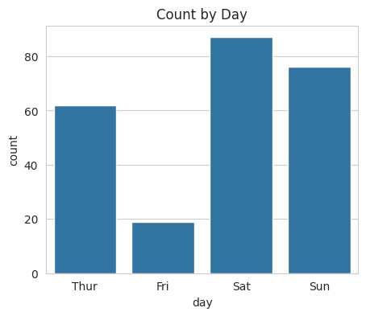
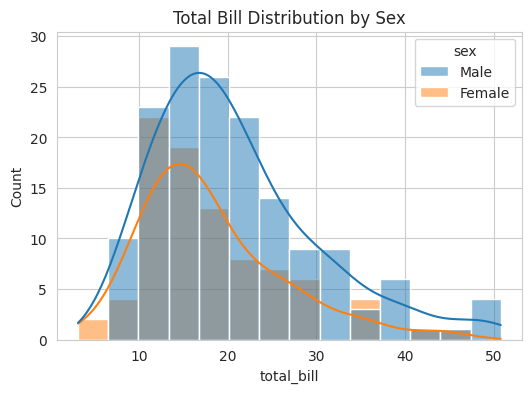
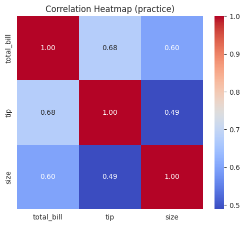
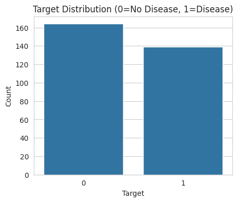
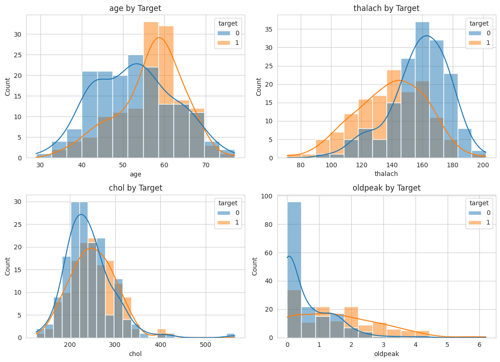
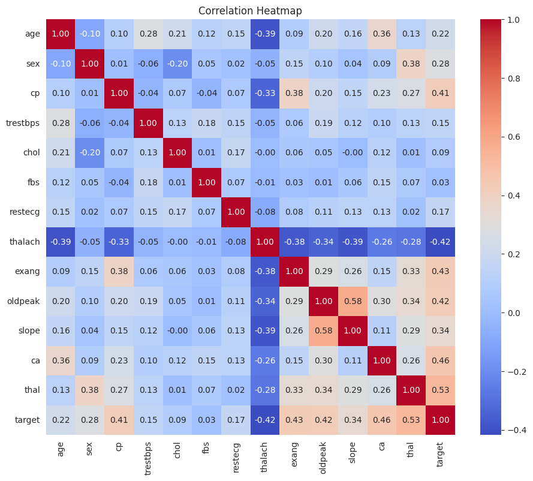
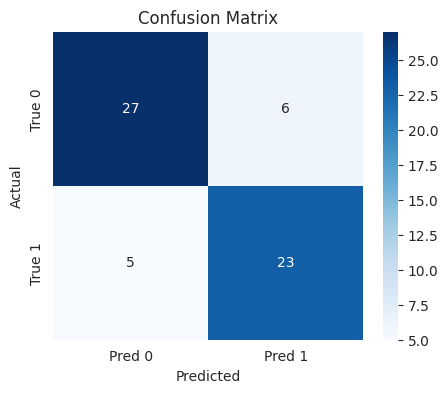
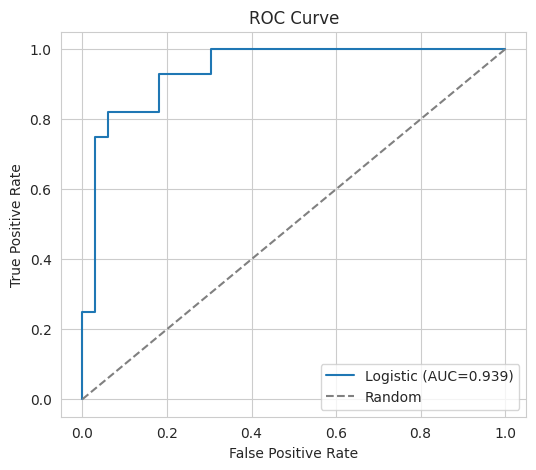
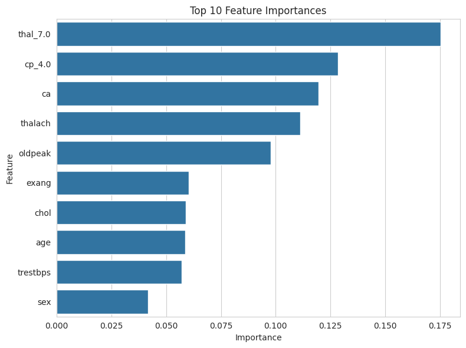

심장병 예측으로 배우는 머신러닝
데이터 하나로 끝까지 — 전처리부터 해석까지
Table of Contents
1. 들어가기 전에
이 교안은 「혼자 공부하는 머신러닝+딥러닝」을 마친 학생이, 배운 내용을 *실무에 가까운 데이터 하나*에 끝까지 적용해 보는 연습입니다.
여러 데이터를 얕게 훑는 대신, 심장병 데이터 *하나*를 가지고 전처리 → 탐색 → 모델링 → 평가 → 해석까지 한 줄기로 꿰어 봅니다. 이렇게 하면 “머신러닝 프로젝트는 실제로 이렇게 흘러간다”를 한 호흡에 익힐 수 있습니다.
1.1. 전체 구성 (3레벨 8막)
- 레벨 1 — 데이터와 친해지기: 1막 문제 정의 / 2막 탐색 / 3막 전처리
- 레벨 2 — 모델 세우고 제대로 평가하기: 4막 기준선 모델 / 5막 평가지표
- 레벨 3 — 성능과 해석으로 완성하기: 6막 특성공학·규제 / 7막 앙상블 / 8막 해석
1.2. 준비물
# 이 실습에 필요한 라이브러리를 한 번에 불러옵니다.
import numpy as np # 수치 계산 (배열, 행렬)
import pandas as pd # 표 형태 데이터 다루기 (엑셀 같은 것)
import matplotlib.pyplot as plt # 그래프 그리기
import seaborn as sns # 그래프를 더 예쁘게 + 통계 그래프
# scikit-learn: 머신러닝 도구 모음
from sklearn.model_selection import train_test_split, cross_val_score, GridSearchCV
from sklearn.preprocessing import StandardScaler
from sklearn.linear_model import LogisticRegression
from sklearn.ensemble import RandomForestClassifier, GradientBoostingClassifier
from sklearn.metrics import (confusion_matrix, classification_report,
roc_curve, roc_auc_score, precision_recall_curve)
# 그래프가 노트북 안에 바로 보이도록 설정
%matplotlib inline
sns.set_style("whitegrid") # 흰 배경에 격자 스타일
print("준비 완료")
준비 완료
참고: 그래프의 제목과 축 이름은 모두 영어로 적습니다. matplotlib 기본 설정에서는 한글이 깨질 수 있기 때문입니다. 한글 설명은 그래프 *바깥*(이 교안의 본문)에서 합니다.
2. 워밍업 — 도구 미리 만져보기
본 실습에 들어가기 전에, 앞으로 계속 쓸 *주요 함수들*을 작은 장난감 데이터로 한 번씩 연습합니다. 여기서 손에 익혀두면 본 실습에서 같은 함수가 나와도 당황하지 않습니다. 이 섹션의 데이터는 심장병과 무관한 *연습용*이니 부담 없이 돌려보세요.
2.1. 0-1. 연습용 데이터 만들기 / 불러오기
seaborn에는 연습용 데이터가 내장돼 있습니다. 가장 유명한 =tips=(식당 팁) 데이터를 씁니다.
# sns.load_dataset: seaborn 내장 연습용 데이터를 불러옴
# - 인자: 데이터 이름 (예: "tips", "iris", "titanic")
tips = sns.load_dataset("tips")
# 어떤 컬럼이 있는지 미리보기
tips.head()
# 직접 작은 표를 만들 수도 있습니다 (pd.DataFrame)
# - 딕셔너리의 key가 컬럼 이름, value가 그 컬럼의 값들
toy = pd.DataFrame({
"score": [50, 60, 70, 80, 90],
"pass": [0, 0, 1, 1, 1]
})
toy
2.2. 0-2. 데이터 들여다보기 (pandas 핵심)
# shape: (행 수, 열 수)
print("크기:", tips.shape)
# info(): 컬럼별 자료형과 빈 값 여부
tips.info()
크기: (244, 7) <class 'pandas.core.frame.DataFrame'> RangeIndex: 244 entries, 0 to 243 Data columns (total 7 columns): # Column Non-Null Count Dtype --- ------ -------------- ----- 0 total_bill 244 non-null float64 1 tip 244 non-null float64 2 sex 244 non-null category 3 smoker 244 non-null category 4 day 244 non-null category 5 time 244 non-null category 6 size 244 non-null int64 dtypes: category(4), float64(2), int64(1) memory usage: 7.4 KB
# describe(): 숫자 컬럼의 통계 요약 (평균, 최소/최대 등)
tips.describe()
# value_counts(): 한 컬럼에서 각 값이 몇 번 나오는지
# 범주형(요일, 성별 등)에서 특히 유용
print(tips["day"].value_counts())
# isnull().sum(): 컬럼별 빈 값 개수 → 결측치 점검의 기본
print(tips.isnull().sum())
day Sat 87 Sun 76 Thur 62 Fri 19 Name: count, dtype: int64 total_bill 0 tip 0 sex 0 smoker 0 day 0 time 0 size 0 dtype: int64
2.3. 0-3. seaborn 주요 그래프 4종 연습
본 실습에서 쓰는 그래프 함수들을 여기서 미리 그려봅니다.
# (1) countplot: 각 값의 '개수'를 막대로
# 본 실습에서 환자/정상 개수 셀 때 사용
plt.figure(figsize=(5, 4))
sns.countplot(x="day", data=tips) # x: 셀 컬럼, data: 데이터
plt.title("Count by Day")
plt.show()

# (2) histplot: 분포를 막대(히스토그램)로
# hue로 그룹을 색깔로 나눠 비교 → 본 실습에서 환자/정상 분포 비교에 사용
plt.figure(figsize=(6, 4))
sns.histplot(data=tips, x="total_bill", hue="sex", kde=True)
# x: 분포를 볼 컬럼 / hue: 색으로 나눌 그룹 / kde: 매끄러운 곡선 추가
plt.title("Total Bill Distribution by Sex")
plt.show()

# (3) heatmap: 숫자 표를 색으로 → 본 실습에서 상관관계, 혼동행렬에 사용
plt.figure(figsize=(6, 5))
corr = tips.corr(numeric_only=True) # 숫자 컬럼끼리 상관계수
sns.heatmap(corr, annot=True, fmt=".2f", cmap="coolwarm")
# annot: 칸에 숫자 표시 / fmt: 숫자 형식 / cmap: 색 배합
plt.title("Correlation Heatmap (practice)")
plt.show()

# (4) barplot: 그룹별 '평균값'을 막대로 (개수가 아님에 주의!)
# 본 실습에서 특성 중요도를 그릴 때 사용
plt.figure(figsize=(5, 4))
sns.barplot(x="day", y="total_bill", data=tips)
# x: 그룹 / y: 평균 낼 값 → 요일별 평균 결제액
plt.title("Average Bill by Day")
plt.show()

countplot vs barplot 헷갈리지 않기:
countplot은 *개수*를 세고,barplot은 그룹별 *평균*을 냅니다. “몇 개?”면 countplot, “평균 얼마?”면 barplot입니다.
2.4. 0-4. 데이터 나누기 & 교차검증 연습 (sklearn)
본 실습의 핵심 도구인 분할·교차검증을 장난감 데이터로 맛봅니다.
from sklearn.model_selection import train_test_split, cross_val_score
from sklearn.linear_model import LogisticRegression
# 연습용 입력 X와 정답 y
X_toy = tips[["total_bill", "size"]] # 입력: 결제액, 인원수
y_toy = (tips["tip"] > 3).astype(int) # 정답: 팁이 3 초과면 1
# train_test_split: 훈련용/시험용으로 나눔
# - test_size=0.25: 25%를 시험용으로
# - random_state: 결과 고정(재현성)
X_tr, X_te, y_tr, y_te = train_test_split(
X_toy, y_toy, test_size=0.25, random_state=0)
print("훈련 크기:", X_tr.shape, " 시험 크기:", X_te.shape)
훈련 크기: (183, 2) 시험 크기: (61, 2)
# cross_val_score: 교차검증으로 모델 성능을 여러 번 측정
# - 첫 인자: 모델
# - 그다음 X, y: 데이터
# - cv=5: 5조각으로 나눠 5번 검증
# - 반환값: 5개의 점수 배열
scores = cross_val_score(LogisticRegression(max_iter=1000),
X_toy, y_toy, cv=5)
print("교차검증 점수 5개:", scores.round(3))
print("평균:", scores.mean().round(3)) # 보통 평균을 대표값으로 봄
교차검증 점수 5개: [0.673 0.755 0.714 0.837 0.646] 평균: 0.725
왜 교차검증? 한 번만 나눠 측정하면 “운 좋게/나쁘게” 나뉜 것일 수 있습니다. 여러 번 나눠 평균을 내면 더 믿을 만한 성능 추정이 됩니다.
2.5. 0-5. 평가 지표 연습 (sklearn.metrics)
본 실습에서 가장 중요한 *혼동행렬*과 *지표 보고서*를 미리 봅니다.
from sklearn.metrics import confusion_matrix, classification_report
# 아주 작은 예시: 실제 정답과 모델 예측
y_true = [1, 1, 0, 0, 1, 0] # 진짜
y_hat = [1, 0, 0, 0, 1, 1] # 예측 (2개 틀림)
# confusion_matrix: 맞춤/틀림을 4칸 표로
print("혼동행렬:")
print(confusion_matrix(y_true, y_hat))
# classification_report: 정밀도/재현율/F1을 한 번에
print(classification_report(y_true, y_hat))
혼동행렬:
[[2 1]
[1 2]]
precision recall f1-score support
0 0.67 0.67 0.67 3
1 0.67 0.67 0.67 3
accuracy 0.67 6
macro avg 0.67 0.67 0.67 6
weighted avg 0.67 0.67 0.67 6
이 지표들의 *의미*는 본 실습 5막에서 의료 맥락으로 자세히 다룹니다. 지금은 “이런 함수가 이런 표를 내놓는다”만 눈에 익히면 충분합니다.
3. 레벨 1 — 데이터와 친해지기: “심장병 데이터, 너는 누구냐”
머신러닝에서 가장 흔한 실수는 데이터를 이해하기도 전에 모델부터 돌리는 것입니다. 레벨 1에서는 모델을 한 줄도 쓰지 않습니다. 대신 데이터가 무엇인지 충분히 친해집니다.
3.1. 1막. 문제 정의 — “무엇을 예측하는가”
3.1.1. 무슨 문제인가
우리가 가진 데이터는 환자 약 303명의 건강 기록입니다. 각 사람마다 나이, 혈압, 콜레스테롤 같은 13가지 정보가 있고, 마지막에 *심장병이 있는지 없는지*가 적혀 있습니다.
우리의 목표는 이겁니다: 13가지 정보를 보고, 이 사람이 심장병이 있는지 맞히는 모델 만들기. 정답이 “있다/없다” 둘 중 하나이므로 이것은 이진 분류(binary classification) 문제입니다.
3.1.2. 데이터 불러오기
# UCI 심장병 데이터를 인터넷에서 바로 불러옵니다.
url = ("https://archive.ics.uci.edu/ml/machine-learning-databases/"
"heart-disease/processed.cleveland.data")
# 이 데이터 파일에는 컬럼 이름이 없으므로 직접 붙여줍니다.
columns = ["age", "sex", "cp", "trestbps", "chol", "fbs", "restecg",
"thalach", "exang", "oldpeak", "slope", "ca", "thal", "target"]
# pd.read_csv: 쉼표로 구분된 텍스트 파일을 표로 읽는 함수
# - 첫 번째 인자(url): 읽어올 파일의 위치
# - names: 컬럼(열) 이름 목록을 직접 지정
# - na_values: 이 기호가 보이면 '결측치(빈 값)'로 처리하라는 뜻. 여기선 "?"
df = pd.read_csv(url, names=columns, na_values="?")
# df.head(): 표의 맨 위 몇 줄을 미리보기 (기본 5줄)
df.head()
3.1.3. 각 컬럼이 무슨 뜻일까
컬럼 이름이 줄임말이라 낯설 겁니다. 하나씩 뜻을 알아야 데이터에 애착이 생깁니다.
age: 나이sex: 성별 (1 = 남성, 0 = 여성)cp: 흉통(가슴 통증) 유형 — 숫자지만 사실은 4가지 *종류*를 나타냄trestbps: 안정 시 혈압chol: 콜레스테롤 수치fbs: 공복 혈당이 120을 넘는지 (1/0)restecg: 안정 시 심전도 결과 — 종류thalach: 운동 중 최대 심박수exang: 운동 중 협심증(가슴 통증) 발생 여부 (1/0)oldpeak: 운동 후 심전도 변화 정도slope: 심전도 곡선의 기울기 — 종류ca: 색조 검사로 보이는 주요 혈관 수 (0~3)thal: 지중해빈혈 검사 결과 — 종류target: 정답. 0 = 심장병 없음, 1~4 = 심장병 있음
3.1.4. 정답을 0과 1로 정리하기
원래 target은 0,1,2,3,4 다섯 값입니다. 0은 “없음”, 나머지는 모두 “있음”의 정도입니다. 우리는 “있다/없다”만 맞히면 되므로 1 이상을 전부 1로 합칩니다.
# (df["target"] > 0): 각 값이 0보다 큰지 검사 → True/False 결과
# .astype(int): True를 1, False를 0으로 바꿈
df["target"] = (df["target"] > 0).astype(int)
# value_counts(): 각 값이 몇 번 나오는지 세어줌
print(df["target"].value_counts())
target 0 164 1 139 Name: count, dtype: int64
3.1.5. 나의 가설 세우기
모델을 돌리기 전에, *직접 추측*해 봅시다. 어떤 특성이 심장병과 관계가 깊을까요? 예를 들어 “나이가 많을수록”, “콜레스테롤이 높을수록”, “운동 중 가슴 통증이 있으면” 위험할 것 같다고 적어 둡니다.
이 가설은 8막에서 모델이 내놓은 결과와 *대조*할 것입니다. 내 직관이 맞았는지 확인하는 재미가 이 프로젝트의 마지막 즐거움입니다.
3.2. 2막. 탐색적 분석 — “그림으로 데이터 읽기”
숫자만 보면 머리에 안 들어옵니다. 그림으로 봐야 데이터가 보입니다. 이 단계를 EDA(Exploratory Data Analysis, 탐색적 데이터 분석)라고 합니다.
3.2.1. 먼저 전체를 훑어보기
# df.info(): 각 컬럼의 자료형과 '비어 있지 않은 값의 개수'를 보여줌
# → 결측치(빈 값)가 어디 있는지 한눈에 파악
df.info()
<class 'pandas.core.frame.DataFrame'> RangeIndex: 303 entries, 0 to 302 Data columns (total 14 columns): # Column Non-Null Count Dtype --- ------ -------------- ----- 0 age 303 non-null float64 1 sex 303 non-null float64 2 cp 303 non-null float64 3 trestbps 303 non-null float64 4 chol 303 non-null float64 5 fbs 303 non-null float64 6 restecg 303 non-null float64 7 thalach 303 non-null float64 8 exang 303 non-null float64 9 oldpeak 303 non-null float64 10 slope 303 non-null float64 11 ca 299 non-null float64 12 thal 301 non-null float64 13 target 303 non-null int64 dtypes: float64(13), int64(1) memory usage: 33.3 KB
# df.describe(): 숫자 컬럼들의 통계 요약
# 평균(mean), 표준편차(std), 최소/최대, 사분위수 등을 표로
df.describe()
3.2.2. 정답은 균형 잡혀 있나 (불균형 확인)
환자와 정상인의 수가 비슷한지 봅니다. 한쪽이 압도적으로 많으면(불균형) 나중에 평가 방법을 신경 써야 합니다.
plt.figure(figsize=(5, 4)) # 그래프 크기 (가로, 세로 인치)
# sns.countplot: 각 값의 개수를 막대로 그림
# - x: 어떤 컬럼을 셀지
# - data: 데이터 출처
sns.countplot(x="target", data=df)
plt.title("Target Distribution (0=No Disease, 1=Disease)") # 제목(영어)
plt.xlabel("Target")
plt.ylabel("Count")
plt.show() # 그래프 화면에 출력

심장병 데이터는 환자와 정상인이 대략 반반이라 크게 불균형하지 않습니다. 그래도 “균형을 먼저 확인한다”는 습관 자체가 중요합니다.
3.2.3. 특성 하나하나가 환자/정상을 가르나
연속형 특성(나이, 콜레스테롤 등)을 환자 그룹과 정상 그룹으로 나눠 분포를 겹쳐 그립니다. 두 분포가 많이 겹치면 그 특성은 구별에 큰 도움이 안 되고, 뚜렷이 갈라지면 예측에 유용합니다.
# 연속형 특성 4개를 골라 한 화면에 2x2로 그립니다.
features = ["age", "thalach", "chol", "oldpeak"]
# plt.subplots: 여러 그래프를 격자로 배치
# - 2, 2: 2행 2열
# - figsize: 전체 크기
# - axes: 각 칸을 가리키는 배열
fig, axes = plt.subplots(2, 2, figsize=(11, 8))
for feature, ax in zip(features, axes.flatten()):
# sns.histplot: 히스토그램(분포 막대그래프)
# - hue="target": 정답 값에 따라 색을 다르게
# - kde=True: 분포를 매끄러운 곡선으로도 표시
# - ax: 어느 칸에 그릴지 지정
sns.histplot(data=df, x=feature, hue="target", kde=True, ax=ax)
ax.set_title(f"{feature} by Target")
plt.tight_layout() # 그래프끼리 겹치지 않게 간격 자동 조정
plt.show()

여기서 무엇이 보이는지 직접 관찰하세요. 예를 들어 최대 심박수(thalach)는
환자와 정상이 꽤 갈라져 보일 수 있습니다.
3.2.4. 특성끼리의 관계 (상관 히트맵)
어떤 특성들이 서로 비슷하게 움직이는지 봅니다.
plt.figure(figsize=(11, 9))
# df.corr(): 모든 숫자 컬럼 쌍의 상관계수 계산 (-1 ~ +1)
# +1에 가까우면 같이 커지고, -1이면 반대로 움직임
corr = df.corr()
# sns.heatmap: 숫자 표를 색으로 표현
# - annot=True: 칸 안에 숫자도 표시
# - fmt=".2f": 숫자를 소수점 2자리로
# - cmap: 색 배합
sns.heatmap(corr, annot=True, fmt=".2f", cmap="coolwarm")
plt.title("Correlation Heatmap")
plt.show()

맨 아래 target 줄을 보면, 각 특성이 심장병과 얼마나 관련 있는지
숫자로 확인할 수 있습니다. 1막에서 세운 가설과 비교해 보세요.
3.3. 3막. 전처리 — “더러운 데이터 길들이기”
실무 데이터는 깨끗하지 않습니다. 빈 값이 있고, 숫자처럼 보이지만 사실은 ’종류’인 값도 있습니다. 모델에 넣기 전에 다듬어야 합니다.
3.3.1. 결측치 찾고 채우기
# df.isnull(): 각 칸이 비었으면 True
# .sum(): 컬럼별로 True(=빈 값) 개수를 더함
print(df.isnull().sum())
age 0 sex 0 cp 0 trestbps 0 chol 0 fbs 0 restecg 0 thalach 0 exang 0 oldpeak 0 slope 0 ca 4 thal 2 target 0 dtype: int64
=ca=와 =thal=에 빈 값이 몇 개 있을 겁니다. 행을 통째로 버릴 수도 있지만, 데이터가 적으니 대표값으로 채우는 방법을 씁니다. 이 두 컬럼은 ’종류’를 나타내므로 평균보다 최빈값(가장 자주 나오는 값) 으로 채우는 것이 자연스럽습니다.
for col in ["ca", "thal"]:
# df[col].mode(): 최빈값(들)을 반환 → [0]으로 첫 번째 값 선택
mode_value = df[col].mode()[0]
# fillna: 빈 값을 지정한 값으로 채움
df[col] = df[col].fillna(mode_value)
print("결측치 처리 후:")
print(df.isnull().sum().sum(), "개 남음") # 전체 빈 값 개수
결측치 처리 후: 0 개 남음
왜 평균이 아니라 최빈값?
ca, =thal=은 “1번 종류, 2번 종류”처럼 *분류*입니다. 종류의 평균(예: 1.7번 종류)은 의미가 없습니다. 그래서 가장 흔한 종류로 채웁니다. 반대로 나이·혈압 같은 *연속형*이라면 평균이나 중앙값이 적절합니다.
3.3.2. 범주형 인코딩 — 숫자의 함정
cp, restecg, slope, =thal=은 숫자로 적혀 있지만 *크기 비교가 무의미한
종류*입니다. 흉통 ’3번 유형’이 ’1번 유형’보다 3배 크거나 위험한 게 아니죠.
이런 값을 그대로 두면 모델이 “3 > 1”이라고 오해합니다.
해결책은 원-핫 인코딩(one-hot encoding): 각 종류마다 별도의 0/1 컬럼을 만들어 줍니다.
# 원-핫 인코딩할 '종류형' 컬럼 목록
categorical = ["cp", "restecg", "slope", "thal"]
# pd.get_dummies: 범주형을 0/1 컬럼 여러 개로 펼침
# - columns: 어떤 컬럼을 펼칠지
# - drop_first=True: 종류가 n개면 n-1개 컬럼만 생성
# (정보 손실 없이 컬럼 수를 줄여 중복을 피함)
df = pd.get_dummies(df, columns=categorical, drop_first=True)
print("인코딩 후 컬럼 수:", df.shape[1]) # shape = (행 수, 열 수)
df.head()
인코딩 후 컬럼 수: 19
3.3.3. 입력(X)과 정답(y) 나누기, 그리고 훈련/테스트 분리
# X: 정답을 뺀 나머지 전부 (모델의 입력)
# y: 정답 컬럼만
X = df.drop("target", axis=1) # axis=1 은 '열'을 뜻함
y = df["target"]
# train_test_split: 데이터를 훈련용/시험용으로 나눔
# - test_size=0.2: 20%를 시험용으로
# - random_state=42: 매번 같은 방식으로 나누도록 고정(재현성)
# - stratify=y: 훈련/시험 양쪽의 환자 비율을 똑같이 유지
X_train, X_test, y_train, y_test = train_test_split(
X, y, test_size=0.2, random_state=42, stratify=y)
print("훈련:", X_train.shape, " 시험:", X_test.shape)
훈련: (242, 18) 시험: (61, 18)
왜 나누나? 시험 데이터는 “처음 보는 환자”를 흉내 냅니다. 시험 데이터로는 절대 학습하지 않고, 마지막에 성능 측정에만 씁니다. 그래야 실제 새 환자에 대한 성능을 정직하게 알 수 있습니다.
3.3.4. 스케일링 — 단위 맞추기
혈압은 수백 단위, 어떤 값은 0~1 단위입니다. 단위가 들쭉날쭉하면 로지스틱 회귀 같은 모델이 큰 숫자에 휘둘립니다. 모두 비슷한 크기로 표준화합니다.
# StandardScaler: 각 특성을 평균 0, 표준편차 1로 변환
scaler = StandardScaler()
# fit_transform: 훈련 데이터로 '기준'(평균·표준편차)을 배우고(fit) 변환(transform)
X_train_scaled = scaler.fit_transform(X_train)
# transform: 시험 데이터는 '배우지 않고' 훈련에서 배운 기준으로만 변환
# → 시험 정보가 새어 들어가는 것을 막음
X_test_scaled = scaler.transform(X_test)
print("스케일링 완료")
스케일링 완료
중요: 시험 데이터에는
fit을 쓰지 않고transform만 씁니다. 시험 데이터의 평균을 미리 들여다보면 ’시험지를 미리 본’ 셈이 되기 때문입니다.
4. 레벨 2 — 모델 세우고 제대로 평가하기: “예측을 넘어 신뢰로”
이제 모델을 만듭니다. 하지만 핵심은 “성능 숫자 하나”가 아니라 *그 숫자를 어떻게 읽느냐*입니다. 특히 의료에서는 더더욱 그렇습니다.
4.1. 4막. 기준선 모델 — “바닥선을 긋다”
화려한 모델로 바로 가지 않습니다. 먼저 가장 단순한 모델로 점수를 내고, “이게 우리의 바닥선”이라고 정해 둡니다. 나중에 복잡한 모델이 정말 더 나은지 비교할 기준이 필요하기 때문입니다.
# LogisticRegression: 분류용 기본 모델 (책에서 배운 그것)
# - max_iter=1000: 학습 반복 횟수 상한 (수렴 경고 방지용으로 넉넉히)
logreg = LogisticRegression(max_iter=1000)
# fit: 훈련 데이터로 모델 학습
logreg.fit(X_train_scaled, y_train)
# score: 정확도(맞힌 비율) 계산
train_acc = logreg.score(X_train_scaled, y_train)
test_acc = logreg.score(X_test_scaled, y_test)
print(f"훈련 정확도: {train_acc:.3f}")
print(f"시험 정확도: {test_acc:.3f}")
훈련 정확도: 0.855 시험 정확도: 0.820
훈련과 시험 정확도가 비슷하면 과대적합이 심하지 않다는 신호입니다. 이 시험 정확도가 우리의 *기준선*입니다.
4.2. 5막. 평가지표 — “정확도의 함정”
이 막이 이 예제의 *심장부*입니다. 의료에서는 “정확도 85%”라는 말만으로는 모델이 좋은지 알 수 없습니다.
4.2.1. 정확도의 함정
생각해 봅시다. 만약 환자가 전체의 10%뿐이라면, 모두 정상이라고 찍는 바보 모델도 정확도 90%가 나옵니다. 하지만 이 모델은 환자를 단 한 명도 못 잡아냅니다. 정확도가 우리를 속인 것이죠.
4.2.2. 혼동행렬 — 네 칸의 의미
# 시험 데이터에 대한 예측
y_pred = logreg.predict(X_test_scaled)
# confusion_matrix: 예측과 실제를 4칸 표로 정리
cm = confusion_matrix(y_test, y_pred)
plt.figure(figsize=(5, 4))
sns.heatmap(cm, annot=True, fmt="d", cmap="Blues",
xticklabels=["Pred 0", "Pred 1"],
yticklabels=["True 0", "True 1"])
plt.title("Confusion Matrix")
plt.ylabel("Actual")
plt.xlabel("Predicted")
plt.show()

네 칸의 뜻:
- True 0 / Pred 0: 정상을 정상이라 함 (정답)
- True 1 / Pred 1: 환자를 환자라 함 (정답)
- True 1 / Pred 0: 환자를 정상이라 함 → 거짓 음성. 가장 위험! 환자를 집에 돌려보내는 셈입니다.
- True 0 / Pred 1: 정상을 환자라 함 → 거짓 양성. 정밀 검사를 더 하는 비용은 들지만, 위 경우보다는 덜 위험합니다.
4.2.3. 정밀도·재현율·F1
# classification_report: 정밀도/재현율/F1을 한 번에 표로
print(classification_report(y_test, y_pred))
precision recall f1-score support
0 0.84 0.82 0.83 33
1 0.79 0.82 0.81 28
accuracy 0.82 61
macro avg 0.82 0.82 0.82 61
weighted avg 0.82 0.82 0.82 61
용어 정리:
- 정밀도(precision): “환자라고 예측한 사람 중 진짜 환자 비율”
- 재현율(recall): “진짜 환자 중에서 우리가 잡아낸 비율” → 의료에서 핵심!
- F1: 정밀도와 재현율의 균형 점수
의료에서는 보통 *재현율*이 가장 중요합니다. 환자를 놓치는 것(거짓 음성)이 가장 큰 사고이기 때문입니다.
4.2.4. 임계값 조정 — 재현율을 끌어올리기
모델은 기본적으로 “환자일 확률 50% 이상”이면 환자로 판정합니다. 이 기준을 낮추면 더 적극적으로 환자를 잡아냅니다 (재현율↑, 대신 정밀도↓).
# predict_proba: 각 사람이 환자일 '확률'을 반환
# [:, 1] → '환자(1)일 확률' 열만 선택
y_proba = logreg.predict_proba(X_test_scaled)[:, 1]
# 기준값을 0.5 대신 0.3으로 낮춰서 다시 판정
threshold = 0.3
y_pred_low = (y_proba >= threshold).astype(int)
print(f"임계값 {threshold}일 때:")
print(classification_report(y_test, y_pred_low))
임계값 0.3일 때:
precision recall f1-score support
0 0.96 0.70 0.81 33
1 0.73 0.96 0.83 28
accuracy 0.82 61
macro avg 0.84 0.83 0.82 61
weighted avg 0.85 0.82 0.82 61
임계값을 낮추면 재현율이 오르는 대신 정밀도가 떨어지는 *트레이드오프*를 직접 확인하세요. “정답”은 없고, 문제 상황에 따라 선택하는 것입니다.
4.2.5. ROC 곡선과 AUC
모든 임계값에서의 성능을 한 곡선으로 요약한 것이 ROC 곡선이고, 그 아래 넓이가 AUC입니다. 1에 가까울수록 좋고, 0.5는 동전 던지기 수준.
# roc_curve: 여러 임계값에서의 (거짓양성비율, 참양성비율)을 계산
fpr, tpr, thresholds = roc_curve(y_test, y_proba)
# roc_auc_score: 곡선 아래 넓이(AUC)를 하나의 숫자로
auc = roc_auc_score(y_test, y_proba)
plt.figure(figsize=(6, 5))
plt.plot(fpr, tpr, label=f"Logistic (AUC={auc:.3f})")
plt.plot([0, 1], [0, 1], "--", color="gray", label="Random")
plt.title("ROC Curve")
plt.xlabel("False Positive Rate")
plt.ylabel("True Positive Rate")
plt.legend()
plt.show()

5. 레벨 3 — 성능과 해석으로 완성하기: “더 강하게, 더 투명하게”
기준선을 세웠으니, 이제 성능을 끌어올리고 모델이 왜 그렇게 판단하는지 들여다봅니다.
5.1. 6막. 특성공학과 규제 — “특성을 다루는 손맛”
5.1.1. 새 특성 만들기
가진 정보를 조합해 새 특성을 만들면 모델이 더 잘 배울 때가 있습니다. 예를 들어 나이를 구간으로 묶어 봅니다.
# pd.cut: 연속형 값을 구간으로 나눠 '구간 라벨'을 붙임
# - bins: 구간 경계
# - labels: 각 구간 이름
age_group = pd.cut(X_train["age"],
bins=[0, 40, 55, 100],
labels=["young", "middle", "old"])
print(age_group.value_counts())
age old 122 middle 107 young 13 Name: count, dtype: int64
참고: 새 특성이 항상 도움이 되는 건 아닙니다. 만들어 보고 성능을 *비교*해서 판단합니다. “만들면 무조건 좋다”가 아니라 “실험해 본다”가 특성공학의 태도입니다.
5.1.2. 규제 — 모델이 특성에 휘둘리지 않게
규제(regularization)는 모델이 특정 특성에 *지나치게 의존하는 것*을 억제해
과대적합을 막습니다. 로지스틱 회귀에서 규제 강도는 C 로 조절합니다.
C가 작으면 → 규제 강함 → 계수를 강하게 누름 (단순한 모델)C가 크면 → 규제 약함 → 데이터에 더 맞춤 (복잡한 모델)
# penalty="l1": L1 규제(라쏘) → 덜 중요한 특성의 계수를 아예 0으로 만듦
# solver="liblinear": L1 규제를 지원하는 계산 방식
for C in [0.01, 0.1, 1, 10]:
model = LogisticRegression(penalty="l1", solver="liblinear", C=C)
model.fit(X_train_scaled, y_train)
# 계수가 0이 아닌 특성의 개수 = 모델이 '살려둔' 특성 수
n_used = np.sum(model.coef_[0] != 0)
acc = model.score(X_test_scaled, y_test)
print(f"C={C:<5} 사용한 특성 수={n_used:<3} 시험 정확도={acc:.3f}")
C=0.01 사용한 특성 수=0 시험 정확도=0.541 C=0.1 사용한 특성 수=9 시험 정확도=0.869 C=1 사용한 특성 수=15 시험 정확도=0.852 C=10 사용한 특성 수=17 시험 정확도=0.836
C 를 줄일수록 살아남는 특성이 줄어드는 걸 관찰하세요. L1 규제가
*특성 선택*처럼 작동하는 것입니다. “정말 중요한 특성만 남기기”인 셈이죠.
5.2. 7막. 앙상블 — “트리들의 힘을 모으다”
나무(결정트리) 하나는 약하지만, 여러 그루를 모으면 강해집니다. 이것이 앙상블입니다.
5.2.1. 랜덤포레스트
# RandomForestClassifier: 결정트리 여러 개를 만들어 다수결
# - n_estimators=100: 나무 100그루
# - random_state=42: 결과 고정
# 주의: 트리 모델은 스케일링이 필요 없어 '원본' X_train을 씁니다.
rf = RandomForestClassifier(n_estimators=100, random_state=42)
rf.fit(X_train, y_train)
print(f"랜덤포레스트 시험 정확도: {rf.score(X_test, y_test):.3f}")
랜덤포레스트 시험 정확도: 0.869
5.2.2. 그래디언트 부스팅
# GradientBoostingClassifier: 틀린 부분을 다음 나무가 보완하며 차례로 학습
# - learning_rate: 한 번에 얼마나 보완할지 (작을수록 신중)
gb = GradientBoostingClassifier(n_estimators=100,
learning_rate=0.1,
random_state=42)
gb.fit(X_train, y_train)
print(f"그래디언트 부스팅 시험 정확도: {gb.score(X_test, y_test):.3f}")
그래디언트 부스팅 시험 정확도: 0.885
5.2.3. 교차검증과 하이퍼파라미터 튜닝
시험 데이터를 반복해서 쓰면 거기에 맞춰버릴 위험이 있습니다. 그래서 훈련 데이터를 여러 조각으로 나눠 돌려가며 검증합니다(교차검증). 그리고 여러 설정값을 자동으로 시험해 가장 좋은 것을 찾습니다.
# 시험해 볼 설정값들의 조합
param_grid = {
"n_estimators": [100, 200], # 나무 수
"max_depth": [3, 5, None], # 나무 깊이 (None=제한 없음)
"min_samples_split": [2, 5] # 가지를 나누는 최소 샘플 수
}
# GridSearchCV: 모든 조합을 교차검증으로 시험
# - cv=5: 데이터를 5조각으로 나눠 검증
# - scoring="recall": '재현율'을 기준으로 최고를 고름 (의료니까!)
grid = GridSearchCV(RandomForestClassifier(random_state=42),
param_grid, cv=5, scoring="recall")
grid.fit(X_train, y_train)
print("최고 설정:", grid.best_params_)
print(f"최고 재현율(교차검증): {grid.best_score_:.3f}")
최고 설정: {'max_depth': 5, 'min_samples_split': 5, 'n_estimators': 100}
최고 재현율(교차검증): 0.774
5.3. 8막. 해석과 마무리 — “모델이 본 위험 요인”
이 프로젝트의 클라이맥스입니다. 모델을 점수 기계가 아니라 *현실을 설명하는 렌즈*로 바라봅니다.
5.3.1. 특성 중요도 뽑기
# 튜닝으로 찾은 최고 모델 사용
best_rf = grid.best_estimator_
# feature_importances_: 각 특성이 예측에 기여한 정도 (트리 모델 제공)
importances = best_rf.feature_importances_
# 특성 이름과 중요도를 표로 묶고 큰 순서로 정렬
feat_imp = pd.DataFrame({
"feature": X_train.columns,
"importance": importances
}).sort_values("importance", ascending=False)
print(feat_imp)
feature importance
17 thal_7.0 0.175470
11 cp_4.0 0.128491
8 ca 0.119640
5 thalach 0.111262
7 oldpeak 0.097713
6 exang 0.060185
3 chol 0.058995
0 age 0.058557
2 trestbps 0.057040
1 sex 0.041718
14 slope_2.0 0.033243
10 cp_3.0 0.018189
13 restecg_2.0 0.012299
9 cp_2.0 0.009083
16 thal_6.0 0.007240
4 fbs 0.007129
15 slope_3.0 0.003745
12 restecg_1.0 0.000000
plt.figure(figsize=(8, 6))
# 상위 10개만 가로 막대로
sns.barplot(data=feat_imp.head(10), x="importance", y="feature")
plt.title("Top 10 Feature Importances")
plt.xlabel("Importance")
plt.ylabel("Feature")
plt.tight_layout()
plt.show()

5.3.2. 가설과 대조하기
이제 1막에서 적어 둔 *나의 가설*을 꺼냅니다. 그리고 묻습니다:
- 내가 중요하다고 본 특성이 정말 상위에 있는가?
- 의외로 높은 순위에 오른 특성이 있는가?
- 의외로 낮은 특성은? 왜 그럴까?
이 대조가 학습의 핵심입니다. 맞았으면 직관이 데이터로 *검증*된 것이고, 틀렸으면 데이터가 *새로운 사실*을 알려준 것입니다. 둘 다 값진 배움입니다.
5.3.3. 마무리 — 무엇을 배웠나
이 프로젝트 하나로 우리는 머신러닝의 전 과정을 거쳤습니다:
- 문제를 정의하고 (이진 분류)
- 데이터를 그림으로 이해하고 (EDA)
- 더러운 데이터를 다듬고 (전처리)
- 단순한 기준선을 세우고 (로지스틱 회귀)
- 정확도의 함정을 넘어 제대로 평가하고 (재현율, ROC-AUC)
- 특성을 다루고 규제로 다듬고 (특성공학, L1/L2)
- 앙상블로 성능을 올리고 (랜덤포레스트, 부스팅)
- 모델을 해석했습니다 (특성 중요도)
가장 중요한 교훈은 이것입니다: 모델 성능보다 문제 이해가 먼저다. 좋은 머신러닝은 화려한 모델이 아니라, 데이터와 문제를 깊이 이해하고 결과를 정직하게 해석하는 데서 나옵니다.
6. 부록: 단계별 자가 점검
각 막을 남에게 설명할 수 있으면 통과입니다. 코드는 검색하면 나오지만, “왜 그렇게 했는지”는 이해한 사람만 말할 수 있습니다.
- 3막: “이 전처리를 안 했다면 모델에 어떤 문제가 생겼을까?”
- 5막: “재현율 100%는 모두를 환자라 찍으면 쉽게 된다. 왜 그게 좋은 모델이 아닐까?”
- 6막: “규제 강도 C를 줄이면 모델이 어떻게 변할지 예측할 수 있는가?”
- 8막: “이 프로젝트를 처음 보는 사람에게 5분 안에 설명한다면 무엇을 했고 무엇을 알아냈다고 말할까?”